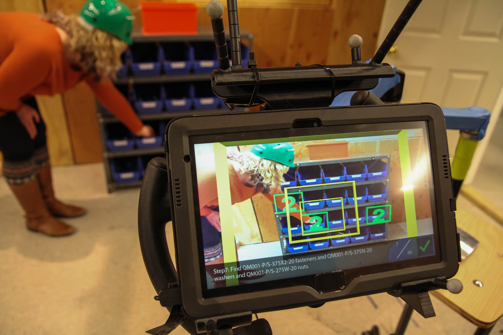

Melynda Hoover
Melynda Hoover
Factory of the Future
Summary
 Augmented Reality is a powerful new technology with already proven advantages for manual assembly tasks. For this project, a tablet-based AR app for displaying instructions for manual assembly tasks was developed. The goal of this project was to compare AR interface elements to determine the most effective methods for depicting navigation ques and overlapping parts. This research yielded new insight into 3D augmented reality interface features in the manufacturing domain.
Augmented Reality is a powerful new technology with already proven advantages for manual assembly tasks. For this project, a tablet-based AR app for displaying instructions for manual assembly tasks was developed. The goal of this project was to compare AR interface elements to determine the most effective methods for depicting navigation ques and overlapping parts. This research yielded new insight into 3D augmented reality interface features in the manufacturing domain.
Problem Statement
Augmented Reality interfaces are a relatively unknown field of interaction design because of the nuances of mixed reality. No previous research identifies the best ways to direct users through 3D spaces like complex industrial manufacturing settings. In addition, AR interfaces present challenges in depth perception, which is important to overcome in assemblies with overlapping parts.
Data Collection
Data was collected through a user study featuring a between subjects design. Users performed three assembly tasks using one of the AR interface modes. Each mode featured different ways of presenting similar information. For example, three different navigation methods were tested including using a 3D arrow to point towards the desired location, floating gates (like you might see in a video game), and a Point of Interest map. Methods of displaying overlapping parts were also tested. The tasks were accompanied by a demographic survey, a spacial thinking test and a qualitative post-questionnaire. Metrics like duration, and number of errors were also collected.
Results
From the data, it was determined that the 3D gates help users perform the assembly tasks more efficiently than the other methods of navigation. It was also found that occlusion is an integral feature to understanding the placement of parts relative to one another in an AR assembly task and that different types of assembly steps may require different methpds of virtual occlusion. More information about the findings of this work can be found in our paper published at the 2017 I/ITSEC Conference .
Continued Work
This is an ongoing project to learn more about the nuances of Augmented Reality in the context of manual assembly. To further our understanding, my colleagues and I are currently building an AR guided assembly app on the Microsoft HoloLens head-mounted display using Unity 3D in order to compare a ahead mounted AR system to our previously developed tablet system.